Description of Components
Fan & electronic machine and components
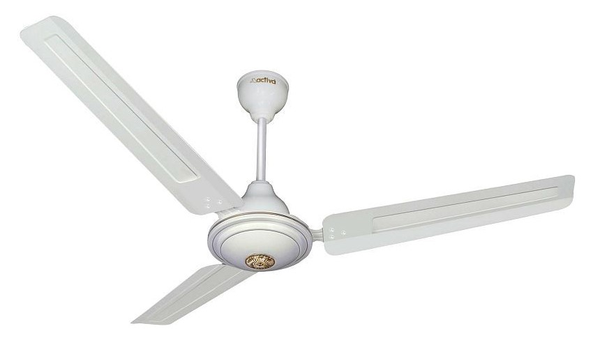
FAN
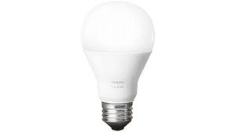
BULB
Arduino
Arduino is an open-source electronics platform based on easy-to-use hardware and software.
It's intended for anyone making interactive projects.
Features of the Arduino UNO:
• Microcontroller: ATmega328.
• Operating Voltage: 5V.
• Input Voltage (recommended): 7-12V.
• Input Voltage (limits): 6-20V.
• Digital I/O Pins: 14 (of which 6 provide PWM output)
• Analog Input Pins: 6.
• DC Current per I/O Pin: 40 mA.
• DC Current for 3.3V Pin: 50 mA.
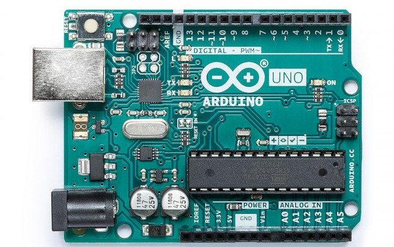
ESP8266 Node MCU
NodeMCU is an open source IoT platform.[4][5] It includes firmware which runs on the ESP8266
Wi-Fi module from Espressif Systems, and hardware which is based on the ESP-12 module.
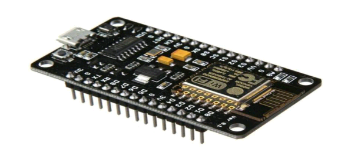
Relay Module :-
In this relay, when a current flows through the coil, it turns it into an electromagnet.
The magnet pushes a switch to the left, forcing the spring contacts together, and completing the circuit they're attached to.
This is a relay from an electronic, hot-water immersion heater programmer.
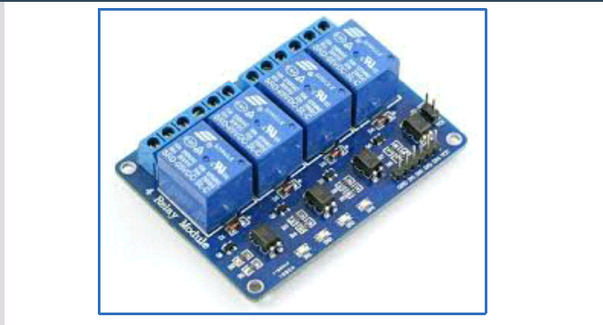
Keypad Door lock :-
The keypads used with keypad locks can vary greatly. ... When the code is entered correctly, a tone or other sound
indicates that the lock has disengaged. Some keypad locks offer a security feature that prevents the lock from opening
for 15 minutes after several failed attempts at entering the code.
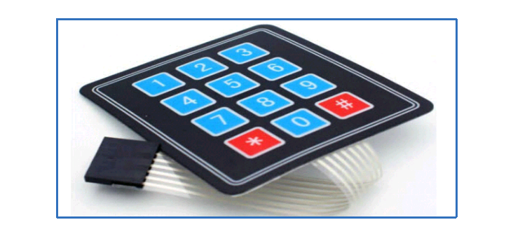
Dustbin :-
Dustbin. a large container used for putting rubbish/garbage in, usually kept outside the house.
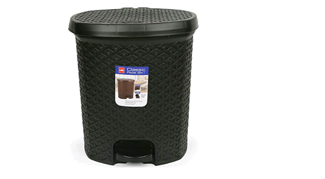
Jumping wires :-
The term "jumper wire" simply refers to a conducting wire that establishes an electrical connection between two points in a circuit.
You can use jumper wires to modify a circuit or to diagnose problems in a circuit.
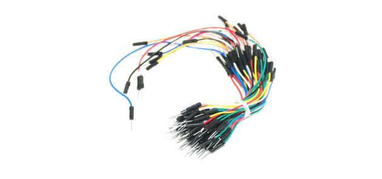
Ultrasonic Sensor :-
Ultrasonic sensors measure distances based on transmitting and receiving ultrasonic signals.
An Ultrasonic sensor is a device that can measure the distance to an object by using sound waves.
It measures distance by sending out a sound wave at a specific frequency and listening for that sound wave to bounce back.
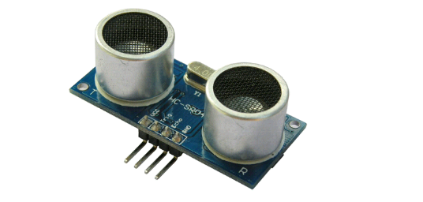
Servo Motor :-
Servo motor works on PWM (Pulse width modulation) principle, means its angle of rotation is controlled by the duration of applied pulse to its Control PIN.
Basicallyservo motor is made up of DC motor which is controlled by a variable resistor (potentiometer) and some gears.
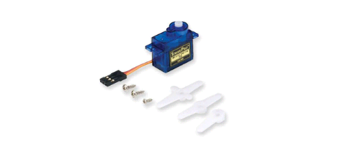
Stepper Motor :-
A stepper motor, also known as step motor or stepping motor, is a brushless DC electric motor that divides a full rotation into a number of equal steps.
Motor Driver :-
The function of motor drivers is to take a low-current control signal and then turn it into a higher-current signal that can drive a motor.
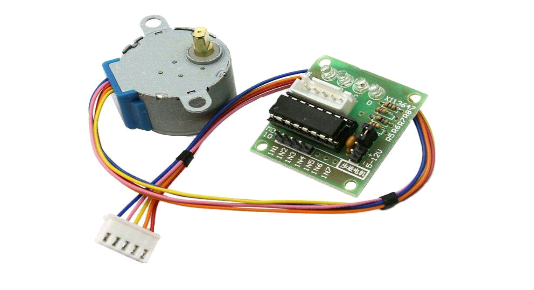